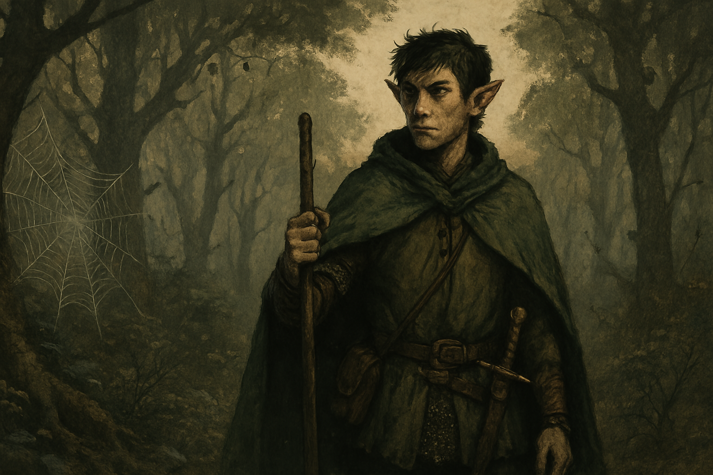

Chapter 3: I'm Sorry for Your Loss
Deep into Lothum

Deep into Lothum
15049.09.06
羅特在馬可斯的口袋中找到了一張紙條，是他的師父伊留給馬可斯的文字，要馬可斯在路上好好照顧羅特，也相信羅特一定可以成為很可靠的人的。圖伊特則找到了十顆左右馬可斯常用的小球，先收了起來。
接著，冒險者們花了一些時間，好好在附近一處樹林邊安葬馬可斯的遺體，而被羅特用力叫醒的芒果蛛則負責看管著剛被綁好的妖精，不讓他有機會脫逃。
在準備材料的途中，羅特也得知拉里爾一直對馬可斯有點好感，但始終沒有好好說出口，但現在也來不及了，讓拉里爾的情緒更難以消化。羅特雖然自己已經很難過了，但他還是努力打起精神，安慰並鼓勵拉里爾。
最後在放入馬可斯遺體並鋪上土後，圖伊特把他用木頭簡單製作的墓碑插在墓前，拉里爾和佛拉唸著奈西斯的禱詞，為馬可斯送上最後一程。
圖伊特用力搧醒昏迷的妖精，想從他口中得到任何有用的消息，但沒有任何所獲，於是便把他轟死了。
因為芒果蛛已經醒了，佛拉便將嚮導的位子再還給他。一路上，大家都很沈默，身邊少了一起旅行許久，如父親角色般的馬可斯，對大家都很難受，而拉里爾則像是更加逃避般，陷入了他與蓋瑞的小世界。
接近傍晚，冒險者們找了個地方休息，圖伊特、佛拉和帕斯卡分工紮營、生火和準備食物，讓羅特、拉里爾和蓋瑞可以有點自己的空間休息。
晚上，佛拉、圖伊特和帕斯卡輪流與芒果蛛守夜。圖伊特發現營帳邊開始出現一些零散的蜘蛛，朝著他們的目的地前進。距離母親大人的巢穴似乎越來越近了，但同時也代表他們距離月光狩獵會的聚集地也很近了，務必得更加謹慎。另外，圖伊特也看見在芒果蛛的保護結界外，有兩名月光狩獵會的妖精正死盯著冒險者們。他試圖朝外攻擊，將一名妖精趕跑了，另一名則持續堅守著。輪到帕斯卡守夜時，他發現圖伊特的背後似乎隱隱約約可以看見有翅膀的形狀。想起之前看到圖伊特異色的翅膀，讓帕斯卡更加警戒。
15049.09.07
早上當帕斯卡把大家喚醒時，所有人都看見圖伊特背後實體化的翅膀了。圖伊特試著用自己從書中學到拍翅的方式運作，順利的飛到空中翱翔。他看見了一條往樹林內的捷徑，走到母親大人的巢穴（有個很明顯肉眼可見的洞穴，那肯定就是母親大人的巢穴），大約只需要一天路程就能到了。而月光狩獵會的聚集地則可能不在地面上，他並沒有看到明顯的聚落。
而圖伊特也發現蓋瑞身上的「詛咒」並沒有如他的宗主所說一命換一命那樣消失，雖然減緩了，但並沒有不見。為了不動搖拉里爾，他決定先將這個秘密守住。
圖伊特告訴大家他發現的捷徑，於是冒險者們扛著睡著的芒果蛛，繼續前進。
雨中，大家行動的速度稍有減緩，同時蓋瑞的狀況也隨著時間明顯地越來越差，拉里爾伴隨著走得也越來越慢。大家也不忍心催促他們走得更快些。這段路程，羅特暫時扮演著偵察兵的角色，和圖伊特的夸塞魔一起提早大家一段路。但也因為要以更快的速度前進，羅特差一點點就中了埋伏在樹林之間的妖精的箭，也幸好在接下來的路上都沒有中埋伏。在圖伊特用第三隻眼追蹤下，發現整條路上穿梭著不少妖精埋伏著，但對於他們的行動，似乎沒有更多的干預。除了林中的妖精外，圖伊特也在空中偵察時發現有騎著巨鷹的妖精在盤旋。在佛拉私下的說明下，得知有部分的妖精會用這樣的方式巡邏，但只要不硬對著他們幹，通常是不會被襲擊的。
一路到午餐時間，終於停下來的拉里爾竟然累倒了，也因此在下午啟程時，帕斯卡負責抱著不支的拉里爾，佛拉則在一旁護衛以及照看蓋瑞。雨開始變大，但也幸好除了雨勢、拉里爾和蓋瑞外，路程上基本上沒有什麼問題。圖伊特突然聽見宗主對他挑釁，而與以往不同，宗主的聲音來自前方，母親大人巢穴的方向，同時也是已經睡醒，窩在羅特頭上的芒果蛛的方向，這讓圖伊特感到異常警戒，但面對能力遠在他之上的宗主，圖伊特也只能小心而已。
晚餐時，被放下來的拉里爾才慢慢甦醒。低落的拉里爾還是以蓋瑞優先，把食糧分給看起來毫無食慾的蓋瑞，在圖伊特的協助下，才成功把食物放進蓋瑞的食道內，就算他沒有咀嚼的意願或能力，也得讓他吃東西才行。拉里爾也在大家半哄半騙下，吃了半份的乾糧。
到母親大人的巢穴前時，雨已經停了。洞穴口是空的，佛拉提議由他待在洞外，隨時有遭遇妖精來襲時，他可以快速通報大家。對於即將見到心心念念的母親大人，羅特的心情很複雜，這是他好久、好久以來的夢想，但同時，羅特也在這段旅程中失去了對他而言如同爸爸般存在的M伯爵，還讓好朋友拉里爾最珍貴的蓋瑞傷到險些損命。當然，還有戴上面具而消失的華生，不知道他現在是否安好？羅特對於許久不見的母親大人，還是有一些不肯定。他是否已經恢復往日的強大而慈祥？是否一樣會願意用他尖銳的腳治癒倒下的夥伴？雖然不肯定，但如果走了這麼久，最後卻逃避了，那夥伴的付出與犧牲，豈不是失去了意義？
踏入洞內，羅特走在最前面，更多的小蜘蛛爬在他身旁，像是要參加一場遊行一樣，不斷前進；圖伊特看見除了蜘蛛之外，還有人形生物的骨頭：人類、妖精都有，而且給人一種被母親大人吃完剩下殘渣的感覺；帕斯卡則看到一張他熟悉的臉，那是他的弟弟帕拉丁的臉，竟然像一張皮一樣掉落在地上，帕斯卡將它拾起，小心地收在包包內，那畢竟是他的家人。
轉過轉角，羅特深吸一口氣，終於看見了母親大人。
但是他的模樣讓羅特愣住了。
圖伊特、帕斯卡、拉里爾和蓋瑞轉過轉角時，也愣在了母親大人前方。
母親大人依然龐大如羅特所憶，但祂一隻眼睛是空洞，另一隻則有不斷蠕動的觸手從中盤出，蜘蛛腳的部分被強壯的肌肉取代，一些腳則被替換成令人不寒而慄的觸手，母親大人的身體上有不少傷口，似乎還有東西還在長出來。
「你來了啊，我的孩子。」母親大人溫柔的嗓音混雜著一股陌生的聲音，對圖伊特而言十分熟悉的他的宗主的聲音。
「如何？喜歡我的傑作嗎？」宗主在圖伊特腦中狂妄地笑著。「我把你們的母親大人照顧得很好吧？」
「噢，看起來有人需要治療呢。」母親大人用祂背後長出的兩隻觸手盤在虛弱的蓋瑞身上，纏住，越纏越緊，越纏越緊，越纏越緊，越纏越緊，直到「啪！」的一聲，蓋瑞的腰椎硬生生斷裂，才被母親大人溫柔地放回地上。「治好了喔。」
接著，母親大人看向理智斷線的拉里爾，將觸手迅速地從他的口中穿入，像是沒有底線似的，不顧拉里爾從喉嚨中勉強擠出的嗚噎聲，擠入體內，直到拉里爾的身體不斷膨脹、膨脹，再膨脹，然後從七孔中伸出祂的觸手。拉里爾的身體最終破碎而掉落在地上。
「快逃啊！」帕斯卡終於恢復理智，轉頭奔走，卻意外地撞上了一面「牆」，那是由無數隻小蜘蛛堆疊而成的恐怖之牆，而且異常的堅硬，帕斯卡只好拿出狼牙棒揮砍。
雖然知道這是該死的宗主搞的事，圖伊特也只能求助他的宗主。圖伊特嘗試呼喚薩姆，卻被宗主無情的訕笑，因此他只好嘗試和宗主談交易，來解救他的夥伴。圖伊特提出以他的情感、身體和靈魂來作為籌碼，宗主卻認為這樣的內容太沒有意思了。
母親大人的觸手用力穿過帕斯卡的腹腔，帕斯卡強忍，血卻還是從口中爆出。羅特已經穿過帕斯卡用狼牙棒劃開的開口，看見跑來幫忙的佛拉。用力抓緊帕斯卡，羅特捨不得放手。
看見隊友的慘狀，圖伊特決定以他的存在作為交易，在交易後，世人將再也想不起他，對他的記憶完全抹消。圖伊特順勢拿起小刀，想向後戳向已將利齒含在他脖子後的母親大人。
「我喜歡你的交易，但是，你刀子拿的方向錯了。」宗主硬是將圖伊特拿著小刀的手，以極其不自然的角度翻轉、扭曲，但揮動的力道還在，小刀就這樣重重戳入圖伊特的內臟，然後用力一扭。
母親大人的第二擊，直接從後方穿入帕斯卡的心臟。羅特感受到他抓緊的手已經鬆了，含淚往前奔跑，然後被一團紫色厚重的漩渦包圍，接著羅特就失去意識了。
15051.05.09
後續的兩年間，羅特每一晚都在夢中重演那一天發生的悲劇。
他記得與他相同陣線的拉里爾、蓋瑞、帕斯卡一一倒下，還有在那之前的M伯爵、華生、蘇加魯、帕拉丁等人。他們的臉都還那麼清晰，但卻永遠聽不見他們的聲音了。
好像還有一個人，但是……為什麼怎麼想都想不起來？為什麼？
夜晚孤獨而讓人心碎，但是當太陽再次升起，羅特也知道自己得堅強的活下去，背負著夥伴們生存的意志，也為了自己。
羅特知道自己成長了，在依靠別人之後，也該成為別人的依靠了。
15049.09.06
Lott found a note in Marcus's pocket, which was a message left for Marcus by his ShifuYi, asking Marcus to take good care of Lott on the road, and believed that Lott would become a very reliable person. Tweeter found about ten small balls commonly used by Marcus and put them away first.
Then, the adventurers spent some time burying Marcus' body at a nearby forest. The spider Mango, who was awakened by Lott, was responsible for guarding the newly tied goblin to prevent him from escaping.
While preparing the materials, Lott also learned that Ra’Leer had always had a crush on Marcus, but had never spoken out properly, but now it was too late, making Ra’Leer’s emotions even more difficult to digest. Lott Although he was already sad, he still tried to cheer up, comfort and encourage Ra’Leer.
Finally, after placing Marcus’ body and covering it with soil, Tweeter inserted his simple tombstone made of wood in front of the tomb. Ra’Leer and Phola recited the prayer of Nessis and sent Marcus on his last journey.
Tweeter slapped the unconscious goblin awake, trying to get any useful information from him, but found nothing, so he blasted him to death.
Because Mango the spider had woken up, Phola returned the guide's seat to him. Along the way, everyone was silent, and it was hard for everyone to be without Marcus, who they had been traveling with for a long time and who was like a father figure. Ra’Leer seemed to be escaping even more, falling into his own little world with Gary.
Towards evening, the adventurers found a place to rest. Tweeter, Phola and Pascal divided their work to set up camp, light fires and prepare food, so that Lott, Ra’Leer and Gary could have their own space to rest.
At night, Phola, Tweeter and Pascal take turns keeping vigil with Mango spider. Tweeter found some scattered spiders starting to appear near the tent, heading towards their destination. It seems that they are getting closer to The Mother's lair, but it also means that they are also very close to the gathering place of the Moonlight Hunting Club, so they must be more cautious. In addition, Tweeter also saw two goblins from the Moonlight Hunting Club staring at the adventurers outside the protective barrier of Mango Spider. He tried to attack outwards and drove one goblin away, while the other one continued to hold on. When it was Pascal's turn to keep vigil, he noticed that a winged shape seemed to be faintly visible behind Tweeter. Thinking of seeing Tweeter's different-colored wings before, Pascal became even more alert.
15049.09.07
When Pascal woke everyone up in the morning, everyone saw the materialized wings behind Tweeter. Tweeter tried to use the flapping method he learned from the book to fly smoothly into the air. He saw a shortcut into the woods and walked to The Mother's lair (there was an obvious cave visible to the naked eye, which must be The Mother's lair). It only took about a day's journey to get there. The gathering place of the Moonlight Hunting Club may not be on the ground. He did not see an obvious settlement.
And Tweeter also discovered that the "curse" on Gary did not disappear as his sect leader said, one life for another. Although it has slowed down, it has not disappeared. In order not to sway Ra'Leer, he decided to keep this secret for now.
Tweeter told everyone about the shortcut he had discovered, so the adventurers carried the sleeping Mango spider and continued forward.
In the rain, everyone’s movement slowed down slightly. At the same time, Gary’s condition became obviously worse and worse with time. Ra’Leer also walked slower and slower. No one had the heart to urge them to go faster. During this journey, Lott temporarily plays the role of a scout, and together with Tweeter's Quasai Demon, we are ahead of schedule. But because he had to move at a faster speed, Lott was almost hit by the arrows of the goblins ambushing in the woods. Fortunately, he was not ambushed on the rest of the way. Tweeter tracked them with his third eye and found that there were many goblins ambushing the whole road, but there seemed to be no more intervention in their actions. In addition to the goblins in the forest, Tweeter also discovered a goblin riding a giant eagle circling during aerial reconnaissance. After Phola's private explanation, I learned that some goblins will patrol in this way, but as long as you don't confront them, they usually won't be attacked.
All the way to lunch time, Ra’Leer finally stopped and collapsed from exhaustion. Therefore, when setting off in the afternoon, Pascal was responsible for holding the exhausted Ra’Leer, while Phola escorted and looked after Gary. The rain started to get heavier, but fortunately, apart from the rain, Ra’Leer and Gary, there were basically no problems on the journey. Tweeter suddenly heard the sect master provoking him, and unlike before, the sect master's voice came from the front, in the direction of The Mother's nest, and also in the direction of the Mango spider that had woken up and nestled on Lott's head. This made Tweeter feel extremely alert, but facing the sect master whose ability was far above him, Tweeter could only be careful.
During dinner, Ra’Leer slowly woke up after being put down. The depressed Ra’Leer gave priority to Gary and gave the food to Gary, who seemed to have no appetite. With the help of Tweeter, he successfully put the food into Gary’s esophagus. Even if he had no desire or ability to chew, he had to let him eat. Ra’Leer also half-coaxed and half-coaxed everyone to eat half of the dry food.
When we arrived in front of The Mother's lair, the rain had stopped. The entrance to the cave is empty, and Phola proposes that he stay outside the cave. If there is an attack by goblins at any time, he can quickly inform everyone. Lott has mixed emotions about the fact that he is about to see The Mother, whom he has longed for. This has been his dream for a long, long time. However, at the same time, Lott also lost Count M, who was like a father to him during this journey, and his good friend Ra’Leer’s most precious Gary was injured and almost died. Of course, there is also Watson who put on a mask and disappeared. I wonder if he is okay now? Lott I am still a little unsure about The Mother, whom I haven’t seen for a long time. Has he regained his former strength and kindness? Would the same man be willing to use his sharp feet to heal his fallen comrades? Although I'm not sure, if I walked for so long and escaped in the end, wouldn't the efforts and sacrifices of my partners lose their meaning?
Stepping into the cave, Lott walked at the front, with more little spiders crawling beside him, moving forward as if they were participating in a parade; Tweeter saw in addition to spiders, there were also bones of humanoid creatures: both humans and fairies, and it gave people the feeling of being eaten by The Mother and leftover residue; Pascal saw a face he was familiar with, that was his brother Paladin's face fell to the ground like a piece of skin. Pascal picked it up and carefully put it in his bag. After all, it was his family.
Turning the corner, Lott took a deep breath and finally saw The Mother.
But his appearance stunned Lott.
Tweeter, Pascal, Ra’Leer and Gary also froze in front of The Mother when they turned the corner.
The Mother is still huge as Lott remembered, but one of its eyes is hollow, and the other has tentacles that are constantly wriggling out of it. Parts of the spider legs have been replaced by strong muscles, and some of the legs have been replaced with chilling tentacles. There are many wounds on The Mother's body, and it seems that there are still things growing.
"You are here, my child." The Mother's gentle voice was mixed with an unfamiliar voice, the voice of his sect master who was very familiar to Tweeter.
"How is it? Do you like my masterpiece?" The sect master smiled arrogantly in Tweeter's mind. "Have I taken good care of your The Mother?"
"Oh, it looks like someone needs treatment." The Mother used the two tentacles growing out of its back to wrap around the weak Gary, wrapping it around, tighter and tighter, tighter and tighter, tighter and tighter, and tighter and tighter, until there was a "pop!", Gary His lumbar vertebrae were suddenly broken, and he was gently put back to the ground by The Mother. "It's cured."
Then, The Mother looked at Ra'Leer, whose sanity was disconnected, and quickly inserted the tentacles from his mouth, as if there was no bottom line, ignoring the sobs that Ra'Leer barely squeezed out of his throat, and squeezed into the body until Ra'Leer's body continued to expand, expand, and expand again, and then stretched out his tentacles from the seven holes. Ra'Leer's body eventually shattered and fell to the ground.
"Run away!" Pascal finally regained his senses and turned around to run, but unexpectedly hit a "wall". It was a terrifying wall made of countless little spiders stacked up, and it was extremely hard. Pascal had to take out a mace and slash it.
Although he knew that this was the fault of his damn sect leader, Tweeter could only ask his sect leader for help. Tweeter tried to call Sham, but was laughed at mercilessly by the suzerain, so he had no choice but to try to negotiate a deal with the suzerain to rescue his partner. Tweeter proposed to use his emotions, body and soul as a bargaining chip, but the sect leader thought that such content was too boring.
The Mother's tentacles forcefully penetrated Pascal's abdominal cavity. Pascal resisted, but blood still burst out from his mouth. Lott had passed through the opening that Pascal had made with his mace and saw Phola running to help. Hold on tightly to Pascal, Lott is reluctant to let go.
Seeing the tragic situation of his teammates, Tweeter decided to trade his existence. After the trade, the world will never remember him again, and his memory will be completely erased. Tweeter took the opportunity to pick up the knife and wanted to stab The Mother backwards, who had already put the sharp teeth in the back of his neck.
"I like your deal, but you are holding the knife in the wrong direction." The sect leader forcibly flipped and twisted Tweeter's hand holding the knife at an extremely unnatural angle, but the force of the swing was still there, and the knife was stabbed hard into Tweeter's internal organs, and then he twisted it hard.
The Mother's second blow penetrated directly into Pascal's heart from behind. Lott felt that his grip had loosened, and ran forward with tears in his eyes, and then was surrounded by a thick purple vortex, and then Lott lost consciousness.
15051.05.09
In the following two years, Lott replayed the tragedy that happened that day in his dreams every night.
He remembered that Ra’Leer, Gary, and Pascal who were on the same side as him fell one by one, as well as Count M, Watson, Sugalu, Paladin and others before that. Their faces are still clear, but their voices can never be heard.
There seems to be another person, but...why can't I remember it no matter how hard I think about it? Why?
The night is lonely and heartbreaking, but when the sun rises again, Lott also knows that he has to live strong, carrying the will of his friends to survive, and for himself.
Lott I know that I have grown up, and after relying on others, it is time to become someone else's to rely on.